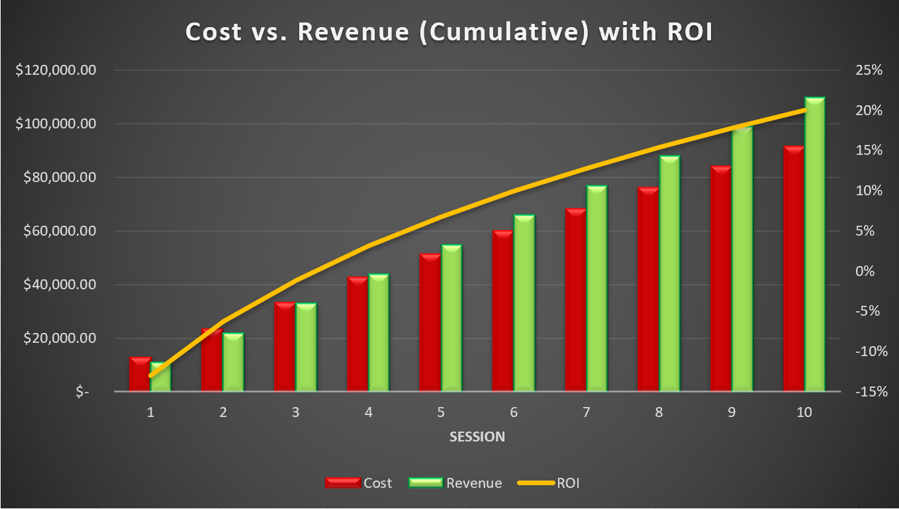

Learning Curve Template
This template uses a learning curve, fixed costs, and hourly costs to determine project break-even, ROI, cost, revenue, and more.
Download TemplateLinear and Polynomial Regression
This template can be used to make predictions using multivariable linear and polynomial regression.
Download Template